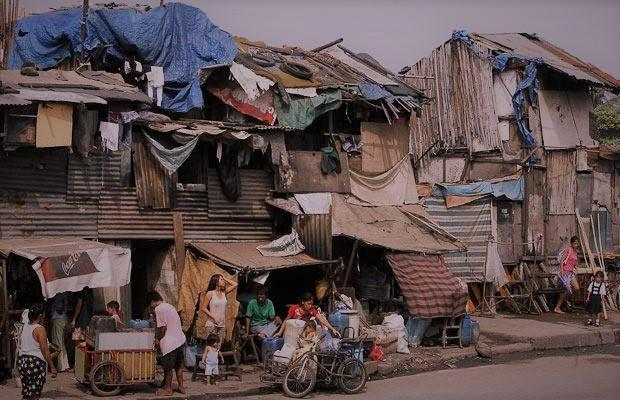
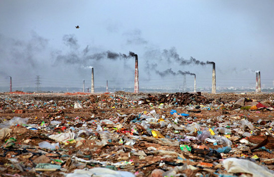
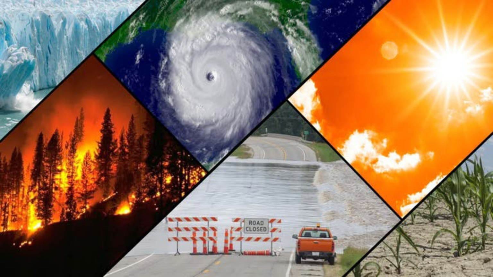
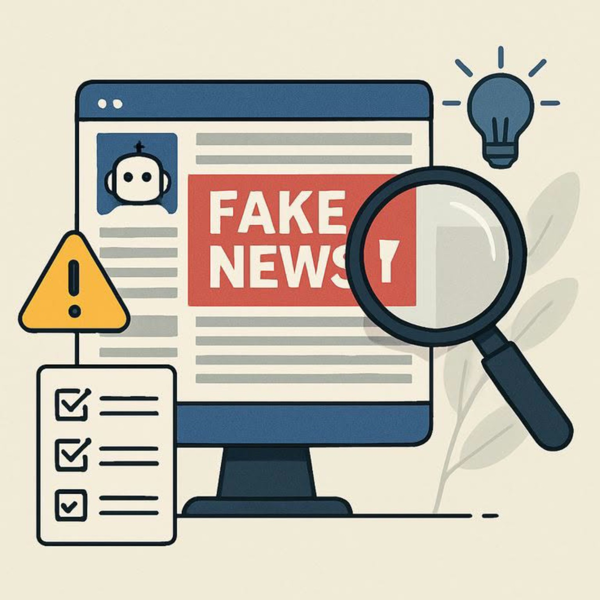

🏠 Home | 📖 Introduction | 🌏 Mga Isyu |

Ang kahirapan ay isang kontemporaryong isyu na tumutukoy sa kawalan ng sapat na pinansyal, materyal, at oportunidad upang matugunan ang mga pangunahing pangangailangan ng tao tulad ng pagkain, malinis na tubig, tirahan, edukasyon, at kalusugan kahirapan ay kakulangan sa sapat na kita.

Ang isyu sa populasyon ay tumutukoy sa mabilis na paglaki o pagliit ng bilang ng tao sa isang bansa na nagdudulot ng malaking epekto sa ekonomiya, kalusugan, edukasyon, at kalikasan. Sa Pilipinas, ang mabilis na pag-laki nito ay kadalasang nagiging sanhi ng kakulangan sa mga batayang serbisyo at Kahirapan at Sobrang Populasyon sa Pinas.

Ang climate change (pagbabago ng klima) ay ang abnormal at pangmatagalang pagbabago sa temperatura, ulan, at iba pang kondisyon ng panahon sa buong mundo. Bilang isang pangunahing kontemporaryong isyu sa Department of Health Eastern Visayas CHD - DOH, dulot ito ng natural na proseso ng kalikasan at ng mga gawain ng tao na nagpapalala ng global warming.

Ang maling impormasyon (misinformation) ay isang mahalagang kontemporaryong isyu na tumutukoy sa pagkalat ng mga balita o datos na hindi totoo, ngunit naibabahagi ng isang tao nang walang masamang intensiyon o hindi alam na mali ito.
Narito ang ilang websites na maaaring gamitin upang makakuha ng impormasyon tungkol sa Pilipinas, kapaligiran, at mga kontemporaryong isyu.
Para sa mga estadistika tungkol sa populasyon, kahirapan, at kalagayan ng bansa.
Visit Philippine Statistics AuthorityPara sa impormasyon tungkol sa kalikasan, polusyon, at pangangalaga sa kapaligiran.
Visit DENRPara sa impormasyon tungkol sa panahon, klima, at mga babala sa sakuna.
Visit PAGASAPara sa impormasyon tungkol sa mga pandaigdigang isyu at mga layunin para sa sustainable development.
Visit United Nations